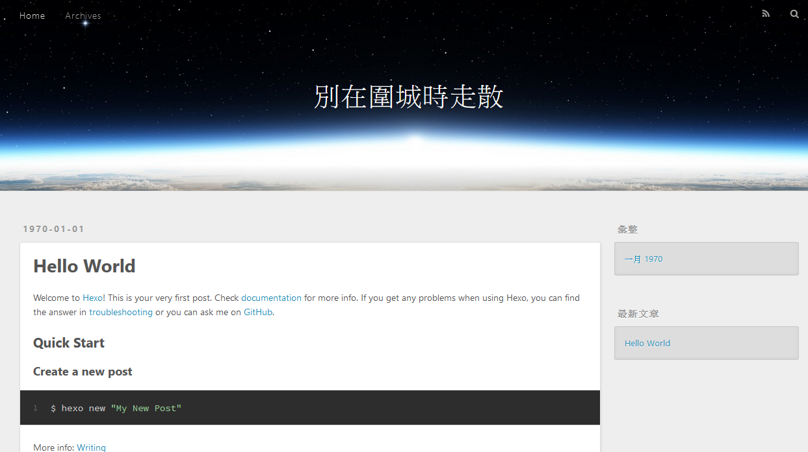

# 起因
偶然看到 Zrn 的網站，覺得好酷炫，我也想要一個，然後我就開始爬他的網站，找到這篇 Hexo + Github Pages 打造專屬於你的網站，猜測網站是用 Hexo 框架作的。
# Hexo
於是我就自己用了一個

看起來完全不像呢...
# Hexo 特點
- Node.js
- 文章可以用 Markdown 格式撰寫
- 快速佈署到 GitHub Page、Heroku
# 趕緊為此而來
npm install hexo-cli -g | |
hexo init blog | |
cd blog | |
npm install | |
hexo server |
# Shoka theme
之後在 Hexo/themes 上尋找喜歡的 theme，發現跟 Zrn 一樣風格的 theme 了。
這套 theme 叫 Shoka (書架)
GitHub https://github.com/amehime/hexo-theme-shoka
使用教學 https://shoka.lostyu.me/computer-science/note/theme-shoka-doc/